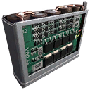

What each round does
Effect on impact as the tuning files give it.
| Round | Fired by | Effect on impact | Max range (m) |
|---|---|---|---|
| Flamethrower Napalm | Resistance Flamethrower | Damage over time: 1 damage every 2 s for 6 s (to machines/objects); Damage over time: 2 damage every 0.5 s for 6 s (to characters) | 14 |
Flamethrower NapalmNapalm

- Stack size
- 240
- Max range
- 14 m
Fuel for the Resistance Flamethrower. It sets targets on fire; the damage comes over time.
From the game files: Damage over time: 1 damage every 2 s for 6 s (to machines/objects); Damage over time: 2 damage every 0.5 s for 6 s (to characters).
 Resistance Flamethrower
Resistance Flamethrower DLC Schematic Point
DLC Schematic PointRecipe per craft: 4 Accelerant, 8 Plastic
High Voltage Battery MagBattery

- Stack size
- 40
The power cell of the experimental Meusser, which turns the rifle into a charged laser.
The normal weapon tuning lists no weapon for it; its numbers are in In experimental weapons below.
Repair JuiceRepair

- Stack size
- 120
The refill for the Companion's repair tool.
Not fired by a weapon, so there is no damage data. The companion and its gear are covered under Items › Companion.
In experimental weapons
Experimental weapons carry their own tuning for some rounds. When you fire the round from that weapon, these numbers replace the normal ones.
| Experimental weapon | Round | Damage | Pellets | Armour × | Comp. × | Falloff | Range (m) | Extra effect |
|---|---|---|---|---|---|---|---|---|
| Experimental Meusser Hunting Rifle | Laser (High Voltage Battery Mag) | 1,200 | 1 | ×1 | ×1.5 | scales with charge: 25% uncharged to 100% fully charged | 1,000 | – |
| Experimental Meusser Hunting Rifle | Overcharged shot blast | – | – | – | – | – | – | Blast: 30 damage to machines within 15 m, 30 to players within 10 m |
Weapons that use it1 weapon
Where to find it
The crafting schematic of each round, what it costs and what one craft takes:
| Ammo | Crafting schematic | Cost | Recipe per craft |
|---|---|---|---|
| Flamethrower Napalm | Flamethrower Napalm | 1 DLC Schematic Point | 4 Accelerant, 8 Plastic |
| High Voltage Battery Mag | No schematic | – | – |
| Repair Juice | No schematic | – | – |
Where ammo comes from:
- Ammo boxes. The map files have 13,420 ammo box spawn points; what a box holds is rolled at random (a crate spawn point: the game may not put a crate on every spot). Ammo boxes on the map
- Destroyed machines drop ammo when you loot their wrecks.
- Crafting. DLC ammo schematics are bought with DLC Schematic Points: “Acquired by crafting DLC items.”
- The Ammo Pack refills ammo; 4 of them are placed by hand in the world. Ammo Packs on the map
- The Salvage skill gives more ammo from every container and machine.
Ammo box counts per region are on the main ammo page.